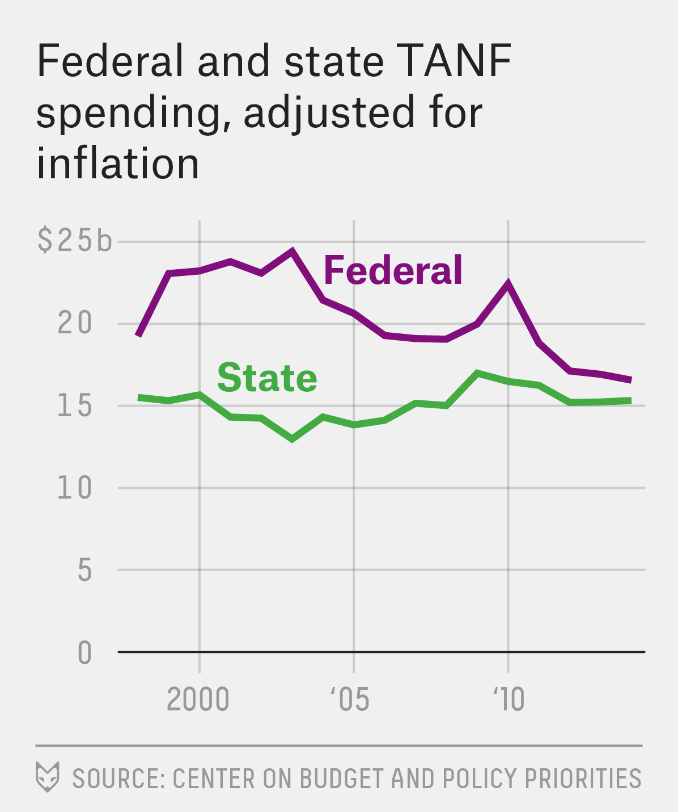
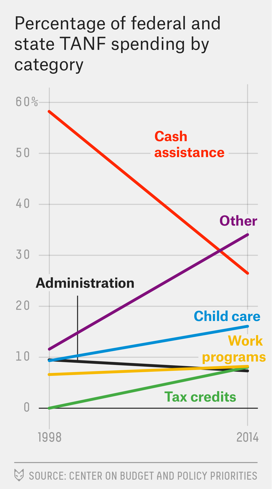

Twenty years after President Bill Clinton fulfilled his vow to “end welfare as we know it,” it’s fair to say: mission accomplished. The old U.S. welfare system is dead. Whether the system that replaced it is better for the poorest Americans remains the subject of fierce debate.
The welfare reform bill that Clinton signed into law 20 years ago this month fractured the U.S. welfare system, from one managed mostly by the federal government to one largely directed by individual states. As each state became empowered to spend its welfare grant as it saw fit, one monolithic system devolved into 50 different ones — with far less money going directly to low-income families.

The 1996 reform didn’t result in a reduction in total spending on
welfare, now known as Temporary Assistance for Needy Families. Since
1998, the first year for which we have complete data, total TANF
spending — both from federal block grants as well as required state
matching funds — has remained essentially flat, after adjusting for
inflation,1 The monthly average of the Consumer Price Index was used to deflate the annual spending statistics.
Perhaps the more significant change, though, is in how that money is being spent. Welfare reform replaced the old, federally run cash assistance program with a system of state-administered block grants. Under TANF, states can spend welfare money on virtually any program aimed at one of four broad purposes: (1) assistance to needy families with children; (2) promoting job preparation and work; (3) preventing out-of-wedlock pregnancies; and (4) encouraging the formation of two-parent families.
Some states have interpreted those purposes — especially the last two categories — “very, very loosely,” said LaDonna Pavetti, a researcher at the Center on Budget and Policy Priorities. After-school programs to reduce teen pregnancy, for example, can be funded through TANF block grants.
The result has been a dramatic shift of resources away from cash assistance and toward spending on other programs. In 1998, nearly 60 percent of welfare spending was on cash benefits, categorized as “basic assistance.” By 2014, it was only about one-quarter of TANF spending. That shift has happened despite a burgeoning economics literature suggesting that direct cash transfers are in many cases the most efficient tool to fight poverty.

Some of the money that used to go to cash assistance now goes to other noncash aid programs, such as child care assistance or work-related activities, and to refundable tax credits that are essentially a different form of cash transfer. But by far the biggest increase comes in what Pavetti’s group classifies as “other,” which the center says “covers a broad range of uses, including child welfare, parenting training, substance abuse treatment, domestic violence services and early education.” Those programs might be worthwhile in their own right, but they don’t have much to do with the original goals of welfare. In 2014, about one-third of TANF spending went to “other” areas, up from 12 percent in 1998.
The shift in spending varies greatly from state to state. California gives close to half of its total welfare dollars directly to low-income residents in the form of cash assistance. Georgia, by contrast, spends 80 percent of its funds on programs in the “other” category, and gives just 8 percent directly to families in cash.
The level of benefits also spans a wide spectrum. In 2012, the maximum monthly amount a single parent with two children could receive varied from $770 in New York to just $170 in Mississippi. And that’s assuming they could qualify. The maximum monthly earnings for this hypothetical individual to be eligible for TANF was as high as $1,829 in Wisconsin but as low as $268 in Alabama.
| SHARE OF TOTAL SPENDING | |||
|---|---|---|---|
| STATE | TOTAL WELFARE SPENDING | CASH ASSISTANCE | “OTHER” CATEGORY |
| Alabama | $189m | 21.0% | 58.0% |
| Alaska | 86 | 46.0 | 3.9 |
| Arizona | 356 | 9.0 | 74.8 |
| Arkansas | 141 | 7.9 | 68.2 |
| California | 6,705 | 45.9 | 22.3 |
| Colorado | 316 | 25.1 | 65.2 |
| Connecticut | 497 | 16.8 | 63.0 |
| Delaware | 106 | 20.1 | 9.8 |
| D.C. | 264 | 22.8 | 31.8 |
| Florida | 999 | 16.6 | 40.3 |
| Georgia | 509 | 8.4 | 79.6 |
| Hawaii | 264 | 22.2 | 26.1 |
| Idaho | 46 | 14.4 | 35.7 |
| Illinois | 1,220 | 6.3 | 27.8 |
| Indiana | 267 | 8.8 | 37.4 |
| Iowa | 221 | 22.8 | 32.5 |
| Kansas | 159 | 14.3 | 34.5 |
| Kentucky | 259 | 51.1 | 11.7 |
| Louisiana | 219 | 9.3 | 66.1 |
| Maine | 85 | 52.9 | 10.2 |
| Maryland | 596 | 19.6 | 33.3 |
| Massachusetts | 1,100 | 26.6 | 29.8 |
| Michigan | 1,396 | 12.0 | 65.8 |
| Minnesota | 551 | 15.6 | 8.4 |
| Mississippi | 99 | 14.5 | 16.7 |
| Missouri | 395 | 21.2 | 61.2 |
| Montana | 53 | 29.9 | 17.4 |
| Nebraska | 116 | 20.1 | 8.7 |
| Nevada | 98 | 50.9 | 35.1 |
| New Hampshire | 62 | 35.1 | 20.5 |
| New Jersey | 1,293 | 16.9 | 46.0 |
| New Mexico | 215 | 22.0 | 29.4 |
| New York | 5,729 | 30.5 | 26.9 |
| North Carolina | 612 | 8.9 | 39.9 |
| North Dakota | 37 | 12.5 | 60.1 |
| Ohio | 1,125 | 25.1 | 17.5 |
| Oklahoma | 197 | 9.3 | 32.0 |
| Oregon | 341 | 41.1 | 35.0 |
| Pennsylvania | 1,059 | 24.2 | 21.1 |
| Rhode Island | 176 | 13.2 | 53.7 |
| South Carolina | 271 | 8.1 | 77.4 |
| South Dakota | 25 | 61.2 | 25.1 |
| Tennessee | 267 | 30.5 | 26.3 |
| Texas | 888 | 7.2 | 72.8 |
| Utah | 94 | 26.2 | 23.6 |
| Vermont | 93 | 20.0 | 12.8 |
| Virginia | 289 | 34.4 | 23.9 |
| Washington | 974 | 18.6 | 41.2 |
| West Virginia | 141 | 21.7 | 26.1 |
| Wisconsin | 657 | 22.9 | 24.9 |
| Wyoming | 29 | 10.8 | 53.0 |
| US Total | 31,889 | 26.5 | 34.1 |
The effects of these changes are hotly disputed and difficult to measure. Welfare reform entailed much more than just creating the block-grant program. It imposed strict work requirements and set limits on how long people could receive benefits, among other changes. (Those requirements also vary by state.) A variety of other policy changes, such as the expansion of the Earned Income Tax Credit, came around the time of welfare reform but weren’t formally part of it.
This much is clear: The various reforms resulted in fewer low-income families getting cash assistance. That was the point, after all. In 1996, 68 out of every 100 low-income families received cash assistance nationwide; but by 2014, that fell to 23 out of every 100 such families.
Advocates for welfare reform hoped that pushing families off of cash assistance would lead more of them to find work. There is evidence that happened. Between 1995 and 2000, the share of never-married mothers working rose from 49 percent to 66 percent; although since then, it has fallen, especially during the Great Recession. The extra income boost that came from work, prodded by the work requirements embedded in the law, helped lift many out of poverty.
But critics argue that the poorest Americans fared less well. According to the Census Bureau, the number of children living in deep poverty — defined as living in families with incomes less than 50 percent of the poverty line — has risen during the past 20 years. And in a new book, sociologists Kathryn Edin and Luke Shaefer argue that what they call “extreme” poverty — families living on $2 a day or less — has as well, and that welfare reform is to blame.
Other experts disagree. In a new report responding to Edin and Shaefer’s book, economist Scott Winship of the conservative Manhattan Institute argues that official figures understate the noncash benefits that people with low incomes often receive, such as food stamps. Overall, welfare reform led to a decline in child poverty when these benefits are incorporated, he argues. And he says that extreme poverty of the kind Edin and Shaefer documented is almost nonexistent for families with children.
“There is little evidence that welfare reform caused an increase in hardship or extreme cash poverty,” Winship wrote.